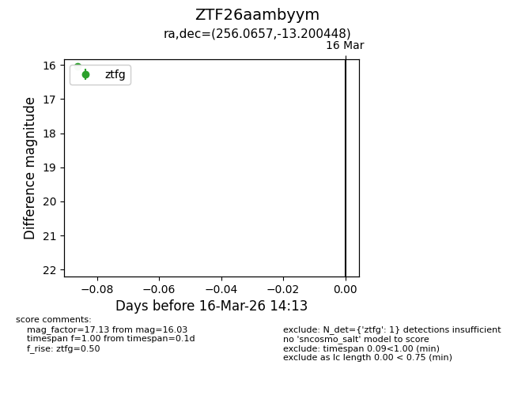
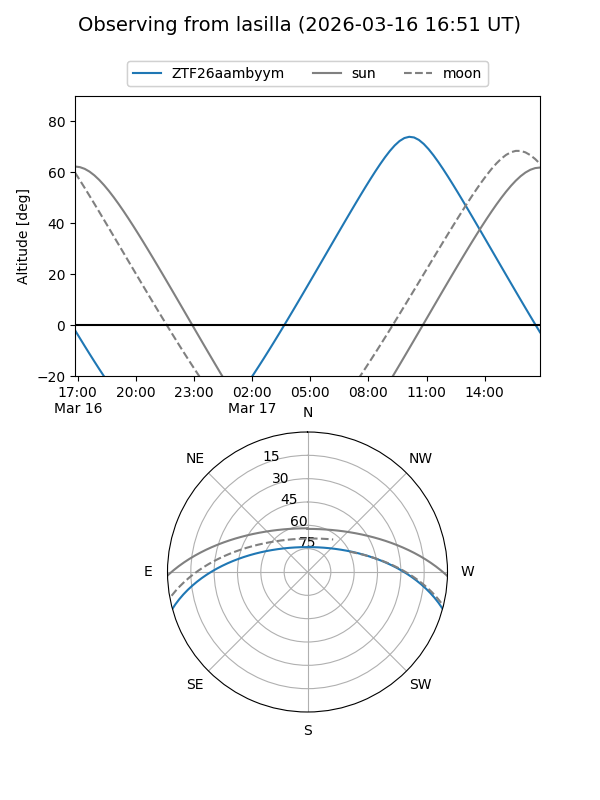
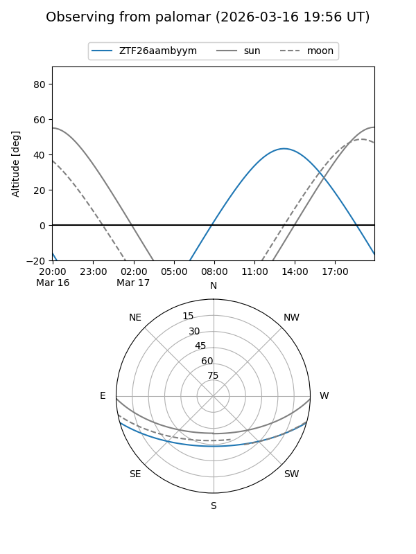
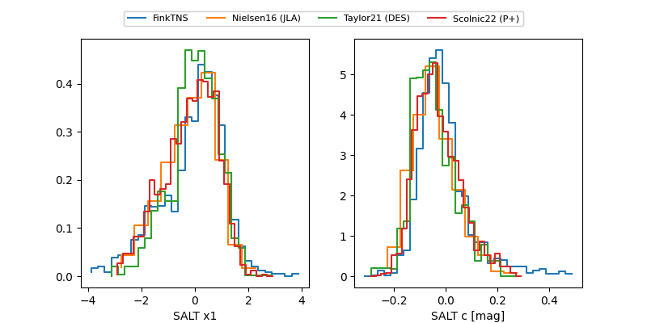

ZTF26aambyym
Target ZTF26aambyym at 2026-03-16 14:16
Aliases and brokers:
FINK: link
Lasair: link
ALeRCE: link
alt names
ZTF26aambyym (ztf,fink_ztf)
Coordinates:
equatorial (ra, dec) = 256.0657,-13.20045
equatorial (HMS+DMS) = 17:04:15.76,-13:12:01.61
galactic (l, b) = (8.0344,+16.64621)
Flags:
Photometry:
last ztfg=16.03
1 ztfg detections
Lightcurve

Visibility


Additional plots
